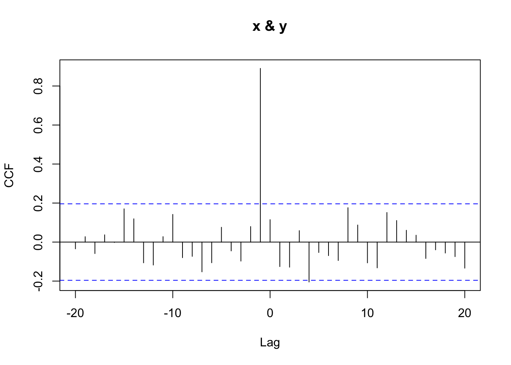
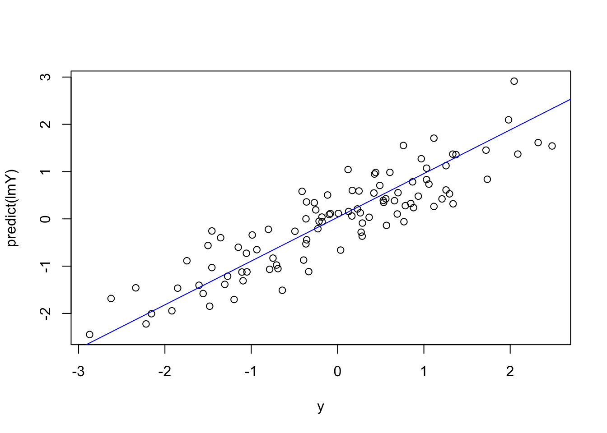
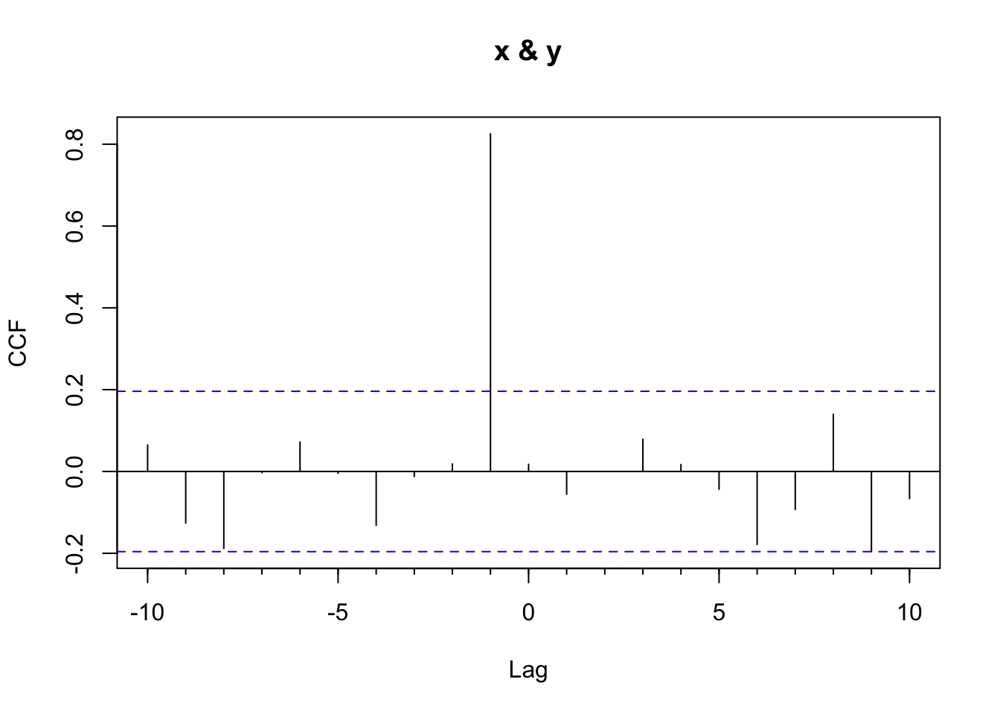
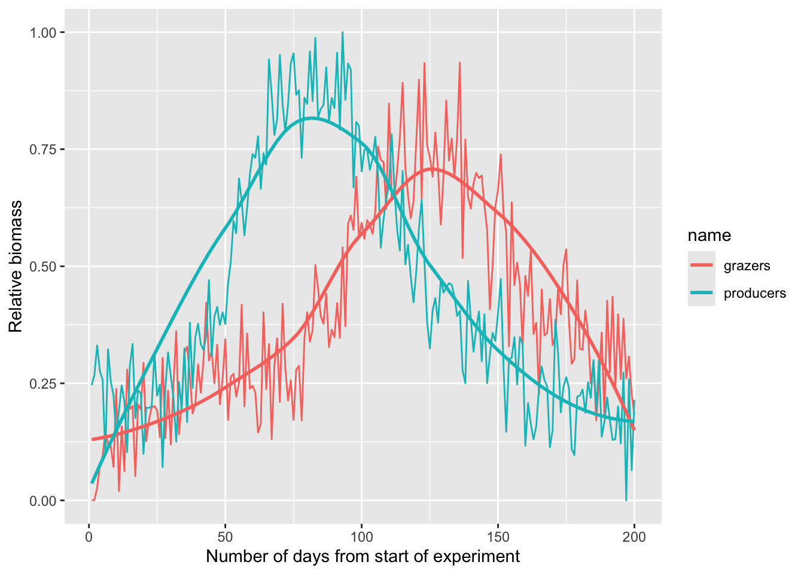

Code
library(tidyverse)
library(forecast)Here we extend the concept of the autocorrelation function to a bivariate case of how y might be correlated with lagged values of x.
Have a look at Chapter three from Cowpertwait and Metcalfe (2009). It’s OK to skim the readings in this book. It’s not a great book for our purposes as many of you haven’t taken linear algebra and the book occasionally goes that way. But it’s useful to hum your way through the chapter nonetheless.
I’ll use forecast (Hyndman et al. 2026) as well as tidyverse (Wickham 2023) syntax.
Here is a quick primer on different ways of lagging data.
Time Series:
Start = 1
End = 10
Frequency = 1
[1] 0.079854780 0.233410688 0.107206736 1.150652223 0.903326353
[6] -0.965635624 -0.146067990 -0.559301795 -0.214952105 0.001970085Time Series:
Start = 2
End = 11
Frequency = 1
[1] 0.079854780 0.233410688 0.107206736 1.150652223 0.903326353
[6] -0.965635624 -0.146067990 -0.559301795 -0.214952105 0.001970085Time Series:
Start = 1
End = 10
Frequency = 1
[1] NA 0.07985478 0.23341069 0.10720674 1.15065222 0.90332635
[7] -0.96563562 -0.14606799 -0.55930180 -0.21495211 [1] NA 0.07985478 0.23341069 0.10720674 1.15065222 0.90332635
[7] -0.96563562 -0.14606799 -0.55930180 -0.21495211[1] 1 10 1[1] 2 11 1[1] 1 10 1Time Series:
Start = 1
End = 11
Frequency = 1
x xLag_v1 xLag_v2 xLag_v3
1 0.079854780 NA NA NA
2 0.233410688 0.07985478 0.079854780 0.07985478
3 0.107206736 0.23341069 0.233410688 0.23341069
4 1.150652223 0.10720674 0.107206736 0.10720674
5 0.903326353 1.15065222 1.150652223 1.15065222
6 -0.965635624 0.90332635 0.903326353 0.90332635
7 -0.146067990 -0.96563562 -0.965635624 -0.96563562
8 -0.559301795 -0.14606799 -0.146067990 -0.14606799
9 -0.214952105 -0.55930180 -0.559301795 -0.55930180
10 0.001970085 -0.21495211 -0.214952105 -0.21495211
11 NA NA 0.001970085 NAChapter 3 introduces cross-correlation in the context of forecasting. Here, we reinforce the idea with a simple example and tie it back to the concept of autocorrelation.
Autocorrelation is the correlation of a variable with its own past values (e.g., \(y_t\) with \(y_{t-1}\)). Cross-correlation extends this idea to two different time series, asking: how does \(x_{t-k}\) relate to \(y_t\)?
You’re already used to the idea that you can correlate two variables \(x\) and \(y\), but you can also lag \(x\) like we did for autocorrelation. For example, \(y_t\) can be correlated to \(x_{t-1}\), which we can implement like this: cor(y[2:n], x[1:(n-1)]).
Here’s a toy example:
[1] 0.1149159[1] 0.8908105
By hand, you can see that \(\text{cor}(x_{t-1}, y_t) = 0.891\), whereas \(\text{cor}(x_t, y_t) = 0.115\). We can view these correlations across multiple lags using the cross-correlation plot from Ccf. That function returns the correlation between \(x_{t+k}\) and \(y_t\) for various values of lag \(k\).
A positive lag on the plot means that x is lagged behind y (i.e., you’re correlating earlier y-values with later x-values), while a negative lag means x leads y — and might be useful for forecasting.
This kind of lagged relationship is useful for predictive modeling, where we use past values of one variable to forecast the present (or future) values of another.
Thus, given a time series like \(x_t\), we could forecast \(y_t\) based on \(x_{t-1}\):

Cross-correlation is commonly used to identify short-lag predictive relationships. This is common in economics (e.g., jobless claims leading GDP) and in environmental science — for instance, where river discharge might precede changes in turbidity, or phytoplankton peaks might precede zooplankton booms.
As with all time series correlations, beware of spurious relationships — especially when both series share strong seasonal or trend components.
Ccf() Normalizes CorrelationsThe eagle-eyed among you will notice that the values from Ccf don’t align exactly with what cor produces. For the detail oriented, here is the scoop.
The ccf() function in R computes cross-correlations that are normalized in a specific way. It uses the full-series mean and standard deviation for both variables, even when the number of overlapping points decreases at higher lags. This section shows what that means in practice and how to manually reproduce the ccf() result at lag 1.
Let’s create some data.
We construct y to depend on a lagged version of x, and use 0 as the first value to avoid introducing an NA.
Let’s get the correlation at lag one using cor()
This computes a standard Pearson correlation using only the overlapping values. It uses n - 1 observations and calculates means and standard deviations from that subset.
Let’s compare that to what ccf() gives

[1] 0.8253849That correlation at lag 1 from ccf_lag1 is slightly different from the result of cor(x_lag, y_trunc) (0.8302037). Why? Because ccf(): - Uses only n - 1 data pairs at lag 1 - But computes the mean and standard deviation using all n values from the full series of x and y
This ensures that correlation values at all lags are on the same scale.
We can manually reproduce what ccf() does
[1] 0.8253849This manual calculation matches the value from ccf() exactly.
You might ask yourself: why does this matter? Well, this normalization approach allows ccf() (and acf()) to produce values that are comparable across different lags, even as the number of overlapping pairs shrinks. It’s a subtle point, but crucial for accurate interpretation of time series correlations. And when lags get really large like in the autotrophs and heterotrophs example, it’s worth understanding what happens under the hood.
Look at the file PhytoGrazersExp1.rds. It contains data used in a mesocosm simulation. The producers time series shows relative biomass of phytoplankton while the grazers time series shows the zooplankton biomass. The times are indexed by day.

It seems clear that there is an offset between the two series. Just eyeballing it, it looks like there is a four to six week lag between the grazers and producers. Use cross correlation and see if you can determine the lagged relationship more specifically.
The file PhytoExp2.rds shows you just the phytoplankton from another experiment. Can you forecast the grazers over that time period? That is, show how you can use the lagged relationship between producers and grazers you found above to model the grazers in PhytoExp2.rds.
Pass in a R Markdown doc with your analysis. Leave all code visible, although you may quiet messages and warnings if desired. Turn in your knitted html. The last section of your document should include a reflection where you explain how it all went. What triumphs did you have? What is still confusing?